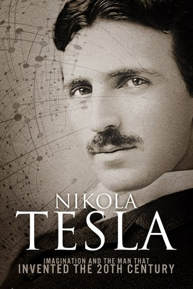

Bibliografía

- Carlson, W. Bernard. Tesla: Inventor of the Electrical Age. Princeton University Press, 2013.
- Seifer, Marc J. Wizard: The Life and Times of Nikola Tesla. Citadel Press, 1998.
- O'Neill, John. Prodigal Genius: The Life of Nikola Tesla. Ives Washburn, 1944.
- Smith, Chris. The Man Who Invented the Twentieth Century: Nikola Tesla. New York: HarperCollins, 1998.
- Documental: Tesla: Master of Lightning, 2000. Producido por PBS.